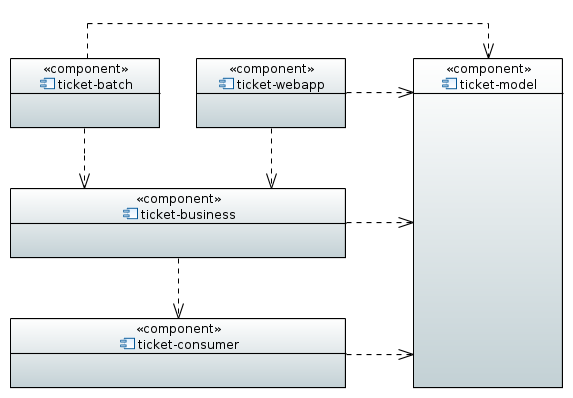

Architecture du projet
Généralités
Application web sur le thème de l’escalade.
Architecture multi-modules :

escalade-webapp
L’application escalade permet à chaque utilisateur inscrit et connecté de :
1. rechercher topos ou sites
2. consulter ou rédiger des articles
3. publier des commentaires
escalade-batches
Module responsable du traitement par lots.
escalade-business
Partie responsable de l’implémentation des règles de gestion fonctionnelles.
escalade-consumer
Gestion de l’accès base de données et autres services web.
escalade-model
Organisation et choix d’implémentation des données de l’application.